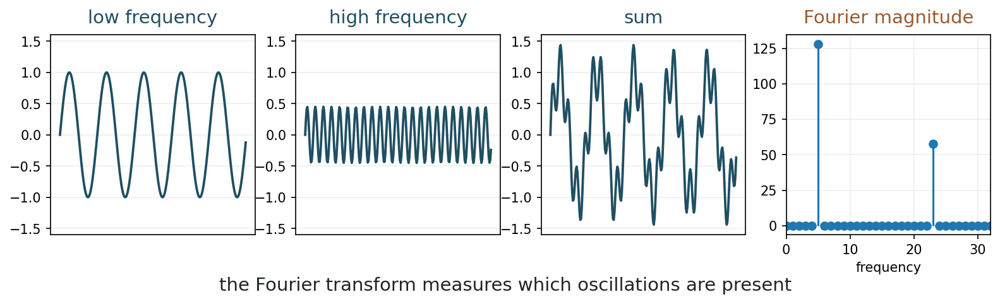
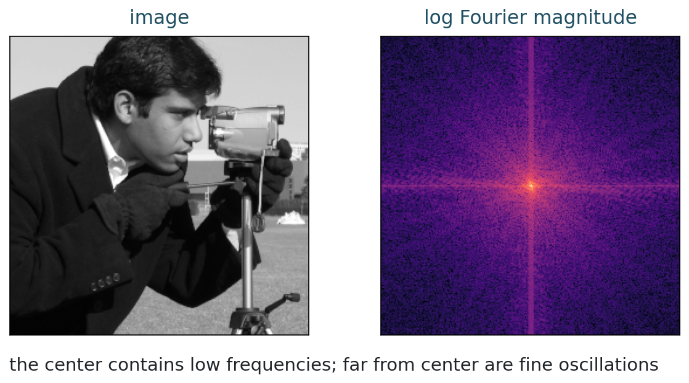
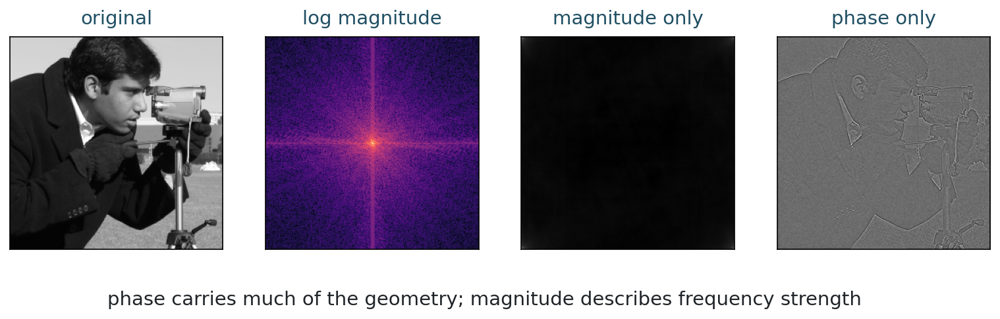
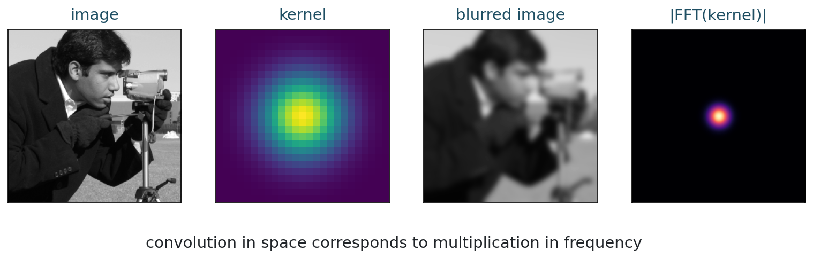
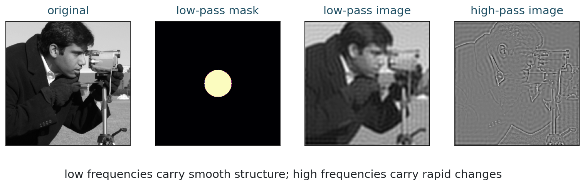
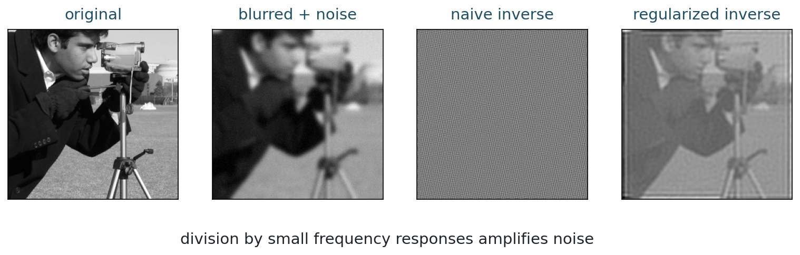

MATH 435: Mathematical Imaging - Week 3
From blur to frequency
What does it mean for an image to contain high frequencies?
| Session | Focus |
|---|---|
| Session 1 | Fourier atoms; projection; energy and Pythagoras; global support; 2D spectra. |
| Session 2 | Convolution theorem; frequency filtering; inverse filtering and stabilization. |
Global directions and energy
For a fixed blur kernel h,
y = h * x.
Why does blur remove fine details?
Fourier analysis rewrites an image as a sum of oscillations.
Low frequencies describe slow variation.
High frequencies describe rapid variation, edges, and texture.
Start with signals
Frequency counts oscillations
A simple oscillation can be written as
s_k[n] = \sin\left(2\pi k n / N\right).
The integer k is the frequency index. Larger k means more oscillations over the same interval.
5 minutes
Suppose
x[n] = \sin(2\pi 5n/N) + 0.5\sin(2\pi 20n/N).
Where should the Fourier magnitude be large?

For a length-N signal:
\widehat{x}[k] = \sum_{n=0}^{N-1} x[n] e^{-2\pi i kn/N}.
Each coefficient measures how much frequency k is present.
The DFT compares x with oscillating directions:
\phi_k[n] = e^{2\pi i kn/N}.
A Fourier coefficient is an inner product with a basis vector:
\widehat{x}[k] = \langle x,\phi_k\rangle
up to the normalization convention.
For an orthonormal Fourier basis:
\|x\|_2^2 = \sum_k |\langle x,\phi_k\rangle|^2.
The energy of the signal is the sum of the squared lengths of its orthogonal projections.
This is the Pythagorean theorem in many dimensions.
Each Fourier basis vector extends across the whole signal or image.
Good at describing:
Harder for:
This will motivate wavelets: local atoms at several scales.
Fourier coefficients are usually complex:
\widehat{x}[k] = a_k + i b_k.
Magnitude:
|\widehat{x}[k]| strength of frequency k
Phase:
\arg(\widehat{x}[k]) alignment of the oscillation
fft computes the DFT quickly. The mathematics is the same transform.
Images are 2D signals
Frequencies have direction
A grayscale image is an array x[m,n].
The 2D Fourier transform uses horizontal and vertical frequency indices:
\widehat{x}[u,v] = \sum_{m,n} x[m,n] e^{-2\pi i(um/M + vn/N)}.

Most software places the zero frequency at the corner.
For visualization, we often use:
Center
Average and slow variation.
Far from center
Fine oscillations and texture.
Direction
Frequency orientation.
An image has strong vertical stripes.
Which direction of frequency should be strong: horizontal, vertical, or both?
What is stored in a coefficient?
Strength and alignment
For each Fourier coefficient:
\widehat{x}[u,v] = |\widehat{x}[u,v]| e^{i\phi[u,v]}.
Magnitude says how much. Phase says where the oscillation lines up.

Which reconstruction preserves more recognizable geometry?
What does that suggest about the importance of phase?
From the repository root:
What convolution becomes in frequency space
The Week 2 bridge
Convolution becomes multiplication
If
y = h * x,
then
\widehat{y} = \widehat{h}\,\widehat{x}.
Blur is easier to understand in frequency space.
If \widehat{h} is small at high frequencies, then
\widehat{y}[u,v] = \widehat{h}[u,v]\widehat{x}[u,v]
has weak high-frequency content.
This is the frequency-space explanation for smoothing.

6 minutes
Translate each statement between image space and frequency space:
Manipulating frequencies
Masks in the Fourier domain
Low-pass filter:
keeps slow variation and removes rapid variation.
High-pass filter:
keeps rapid variation and removes smooth background.

A sharp circular cutoff is mathematically simple.
Is it always a good physical model of an imaging system?
We use it to learn the idea. Real systems often have smoother frequency responses.
The inverse problem, now visible
Division is dangerous
If
\widehat{y} = \widehat{h}\widehat{x} + \widehat{\eta},
the naive inverse is
\widehat{x} = \frac{\widehat{y}}{\widehat{h}}.
What happens where |\widehat{h}| is close to zero?

Deblurring amplifies frequencies that blur suppressed.
If the measurement contains noise, those frequencies may be mostly noise.
One common frequency-domain stabilizer is
\widehat{x}_\lambda = \frac{\overline{\widehat{h}}}{|\widehat{h}|^2 + \lambda}\widehat{y}.
The parameter \lambda controls how much we trust weak frequencies.
8 minutes
Open the corresponding notebook.
Change the low-pass radius and the deblurring stabilizer.
Record one visual effect and one numerical effect.
For each item, give one sentence:
Noise and statistical image models:
MATH 435: Mathematical Imaging